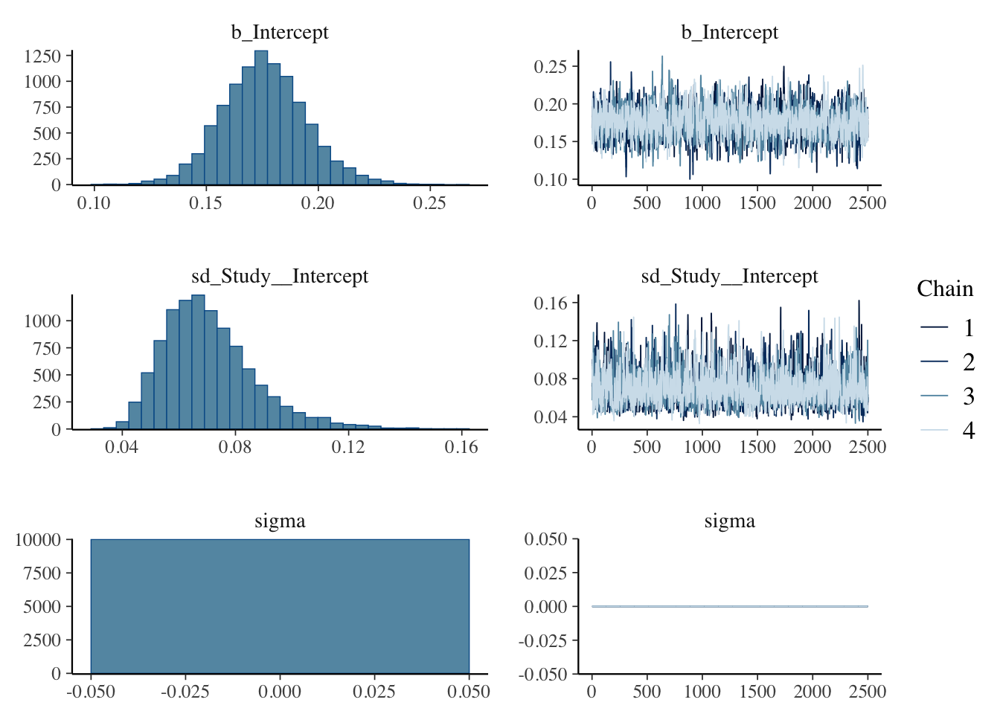
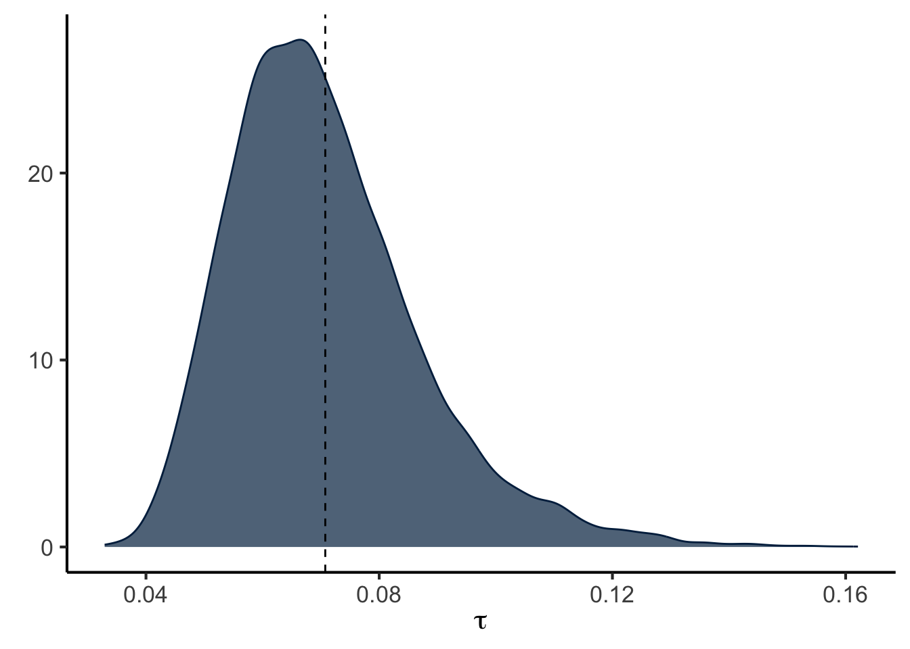

data.sheet <- 'https://docs.google.com/spreadsheets/d/e/2PACX-1vTyvQnc6bLRLGT6QXEMHxiAQVbK_zag_JIAjvYjTMXINcqdkBwglmg_mlj_k9ml9QsrNQl-tZgy8ACl/pub?gid=1100702568&single=true&output=csv'
library(readr)
data <- read_csv(data.sheet)#from a google sheetMeta Analysis of Correlations between Calcium and Cholesterol
Data Souces
Located studies from PubMed searches and checking internal references. Manually re-calculated cholesterol to mM when presented in mg/dL
The data can be found in a google sheet. This script can be found in /Users/davebrid/Documents/GitHub/PrecisionNutrition/Meta Analysis and was most recently run on Sun Jan 19 18:07:00 2025
Meta Analysis - Standard Approach
Analysed data from mean +/- SD of cases and controls
library(meta)
library(tidyr)
analysis <- metacor(data=data %>% dplyr::filter(!is.na(`r`)),
cor = r,
n = n,
studlab = Study,
fixed = FALSE,
random = TRUE,
method.tau = "REML",
hakn = TRUE,
title="Calcium and Cholesterol")
forest(analysis,
fontsize=6,,
test.overall.random=TRUE)
Summary of Standard Approach
There is solid evidence of cross-sectional associations between cholesterol and calcium levels in multiple studies. The aggregate effect size is 0.17 +/- 0.018 (p=4.15^{-8}).
Bayesian Hierarchical Model
Goals and Justification: Our goal is to com up with a pooled estimate of the correlation between cholesterol and calcium in human observational studies. In addition to the approach above, we decided to use a Bayesian approach for two reasons, one is that it allows us to produce full posterior distributions for both the within- and between study-variability. The other is that it allows us to incorporate previous data, in this case the preclinical data reported in Cousineau et al. (2024).
Followed the procedure outlined in Harrer et al. (2021a) and Harrer et al. (2021b) at here. This uses a framework described by Higgins, Thompson, and Spiegelhalter (2008). Under this approach there is a “true” effect (\(\mu\)) with a cross-study variance of \(\tau\). Within this each study (\(\theta _k\)) should be normally distributed defined:
\[\theta _k \sim N(\mu,\tau^2)\] Each study in turn is a proximate measure of the effect size in that population \(\hat{\theta_k}\), with sampling error \(\sigma^2\) drawn from another normal distribution
\[\hat\theta _k \sim N(\theta _k,\sigma^2_k)\]
This can be simplified to
\[\hat\theta _k \sim N(\mu,\sigma^2_k + \tau^2)\]
Defining a Prior Distribution
\[ p \sim (\mu,tau^2) \] We took an approach using weakly informative priors (recommended in Williams, Rast, and Bürkner (2018)) of \(\mu_{weak} = N(0,0.2)\) and \(\tau=HC(0,0.5)\). This means we predict the correlations to be around zero but with a standard deviation of \(\pm 0.2\). For the betwen study variance (\(\tau\)) we used the heavy-tailed only positive Half-Cauchy distribution.
Our alternative prior was the preclinical prior descibed in Cousineau et al. (2024), which was that Spearman’s \(\rho\) was estimated at 0.4-0.5 depending on the condition (parameterized as $_{alt}=N(0.45,0.1)).
We calculated the standard error of the estimate of r using
\[SE = \sqrt{\frac{(1 - r^2)}{(n - 2)}}\]
library(dplyr)
data <-
data %>%
mutate(se=sqrt((1-r^2)/(n-2)))Model Specification We used a Gaussian (normal) distribution to estimate the pooled effect using a random-effects meta-analysis model computed within brms (Bürkner (2021)) version 2.22.0. The model included a fixed effect for the overall pooled estimate and random effects to account for between-study heterogeneity. The within-study variability was also accounted for in the model.
Justification of Priors: We set our prior probabilities that the correlation coefficient would be 0.4, normally distributed with a standard deviation of 0.1, based on the pre-clinical assoications described in Cousineau et al. (2024). We used a weakly informative prior for the between study variation setting it to be a half-Cauchy distribution centered at 0 with a scale parameter of 0.5.
library(brms)
priors <- c(prior(normal(0.4,0.1), class = Intercept),
prior(cauchy(0,0.5), class = sd, lb = 0))
prior_summary(priors) %>% kable(caption="Prior summary for effects of transmission on engine type")Performing a Prior Predictive Check
brms.fit.prior.check <-
brm(r|se(se) ~ 1 + (1|Study),
data = data,
prior = priors,
family = gaussian(),
sample_prior = "only")
library(patchwork)
library(ggplot2)
p1 <- pp_check(brms.fit.prior.check, ndraws = 100, type = "ribbon")
p2 <- pp_check(brms.fit.prior.check, ndraws = 100, type = "stat_2d")
p3 <- pp_check(brms.fit.prior.check, ndraws = 100, type = "stat") +
stat_bin(binwidth=0.6)
p4 <- pp_check(brms.fit.prior.check, ndraws = 100, type = "scatter_avg")
combined_plot <- (p1 + p2) / (p3 + p4) +
plot_annotation(title = "Prior Predictive Checks") &
theme(plot.title = element_text(hjust = 0.5)) +
theme_classic(base_size=12)
combined_plotAs seen above, we did several prior predictive checks and values from simulated from our prior distributions were similar to the observed data.
The model was computed using {brms} (Bürkner (2021), version 2.22.0), calling Stan, using no U-turn sampling (NUTS) as described in Hoffman and Gelman (2014). This was implemented within R (R Core Team (2019)) R version 4.4.2 (2024-10-31).
meta.brm <- brm(r|se(se) ~ 1 + (1|Study),
data = data,
prior = priors,
family = gaussian(), #default but specified
iter = 5000) #not the defaultMCMC Chain Convergence and Resolution
kable(data.frame(
Parameter = names(rhat(meta.brm)),
Rhat = format(rhat(meta.brm), nsmall = 5)),
caption="Rhat values for model (should be between 0.99 and 1.01 for convergence).",
row.names = F)| Parameter | Rhat |
|---|---|
| b_Intercept | 1.00364 |
| sd_Study__Intercept | 1.00091 |
| sigma | NA |
| Intercept | 1.00364 |
| r_Study[DeBacquer1994f,Intercept] | 1.00230 |
| r_Study[DeBacquer1994m,Intercept] | 1.00246 |
| r_Study[Foley2008,Intercept] | 1.00301 |
| r_Study[Gallo2016f,Intercept] | 1.00090 |
| r_Study[Gallo2016f-pm,Intercept] | 1.00182 |
| r_Study[Gallo2016m,Intercept] | 1.00215 |
| r_Study[Green1987_m20-39,Intercept] | 1.00064 |
| r_Study[Green1987_m40-69,Intercept] | 1.00065 |
| r_Study[He2014f,Intercept] | 1.00031 |
| r_Study[He2014m,Intercept] | 1.00062 |
| r_Study[Jorde1999f,Intercept] | 1.00304 |
| r_Study[Jorde1999m,Intercept] | 1.00302 |
| r_Study[Kennedy2009f,Intercept] | 1.00133 |
| r_Study[Kennedy2009m,Intercept] | 1.00047 |
| r_Study[Lind1988,Intercept] | 1.00360 |
| r_Study[Lind1997,Intercept] | 1.00161 |
| r_Study[Meng2021,Intercept] | 1.00220 |
| lprior | 1.00364 |
| lp__ | 1.00056 |
Chain convergence was good with a \(\hat R\) between 1.00031 and 1.00364 for each model estimate.
library(broom.mixed)
tidy(meta.brm, ess = TRUE) %>% kable(caption="Model parameters including effective sample size")| effect | component | group | term | estimate | std.error | conf.low | conf.high | ess |
|---|---|---|---|---|---|---|---|---|
| fixed | cond | NA | (Intercept) | 0.176 | 0.019 | 0.140 | 0.217 | 1541 |
| ran_pars | cond | Study | sd__(Intercept) | 0.071 | 0.017 | 0.046 | 0.110 | 1765 |
| ran_pars | cond | Residual | sd__Observation | 0.000 | 0.000 | 0.000 | 0.000 | NA |
The effective sample size was at least 1540.977 samples for each parameter.
Posterior Probability Check
p1 <- pp_check(meta.brm, ndraws = 100, type = "ribbon")
p2 <- pp_check(meta.brm, ndraws = 100, type = "stat_2d")
p3 <- pp_check(meta.brm, ndraws = 100, type = "stat")
p4 <- pp_check(meta.brm, ndraws = 100, type = "scatter_avg")
combined_plot <- (p1 + p2) / (p3 + p4) +
plot_annotation(title = "Posterior Predictive Checks") &
theme(plot.title = element_text(hjust = 0.5)) +
theme_classic(base_size=12)
combined_plot
As shown above, the posterior predictive checks indicated a good model fit.
Interpretation of Posterior Probabilities
#summary(meta.brm)
#ranef(meta.brm)
fixef(meta.brm) %>% kable(caption="Bayesian estimates of correlation between cholesterol and calcium")| Estimate | Est.Error | Q2.5 | Q97.5 | |
|---|---|---|---|---|
| Intercept | 0.176 | 0.019 | 0.14 | 0.217 |
plot(meta.brm) 
post.samples <- as_draws_df(meta.brm, c("Intercept", "sd_Study__Intercept"))
names(post.samples) <- c("smd", "tau")
library(ggplot2)
ggplot(aes(x = smd), data = post.samples) +
geom_density(fill = "#FFCB05", # set the color
color = "#FFCB05", alpha = 0.7) +
geom_vline(xintercept = mean(post.samples$smd),lty=2) +
geom_vline(xintercept = 0,lty=2) +
labs(x = expression(italic(r)),
y = element_blank()) +
theme_classic(base_size=16)
ggplot(aes(x = tau), data = post.samples) +
geom_density(fill = "#00274C", # set the color
color = "#00274C", alpha = 0.7) +
geom_vline(xintercept= mean(post.samples$tau),lty=2) + # add point at mean
labs(x = expression(tau),
y = element_blank()) +
theme_classic(base_size=16)
The distribution of the posterior probabilities are unimodal, approximately gaussian distributions with a mean of 0.176 with a 95% confidence interval of 0.14-0.217 for the pooled estimate of \(r\). This corresponds to a \(R^2\) of 0.031.
Bayes Factors and Hypothesis Testing
hypothesis(meta.brm, "Intercept>0")$hypothesis %>%
kable(caption="Hypothesis test for estimate >0", digits=3)| Hypothesis | Estimate | Est.Error | CI.Lower | CI.Upper | Evid.Ratio | Post.Prob | Star |
|---|---|---|---|---|---|---|---|
| (Intercept) > 0 | 0.176 | 0.019 | 0.146 | 0.208 | Inf | 1 | * |
#comparason to preclinical data
hypothesis(meta.brm, "Intercept<0.39")$hypothesis %>%
kable(caption="Hypothesis test for estimate <0.39", digits=3)| Hypothesis | Estimate | Est.Error | CI.Lower | CI.Upper | Evid.Ratio | Post.Prob | Star |
|---|---|---|---|---|---|---|---|
| (Intercept)-(0.39) < 0 | -0.214 | 0.019 | -0.244 | -0.182 | Inf | 1 | * |
The posterior probability that \(r > 0\) was 1.00000000000000000000. Similarly this was smaller than the effect observed in mice (\(\rho<0.39\)) 1.00000000000000000000. In both cases the Bayes factor was >100 so this is extremely strong evidence of an effect (see Lee and Wagenmakers (2014)).
Forest Plot for Bayesian Meta-Analysis
library(tidybayes)
library(ggridges)
library(glue)
library(stringr)
library(forcats)
# posterior probabilitieis for each study
study.draws <- spread_draws(meta.brm, r_Study[Study,], b_Intercept) %>%
mutate(b_Intercept = r_Study + b_Intercept)
# pooled effect size draws
pooled.effect.draws <- spread_draws(meta.brm, b_Intercept) %>%
mutate(Study = "Pooled Effect")
# combined draws
forest.data <- bind_rows(study.draws,
pooled.effect.draws) %>%
ungroup() %>%
mutate(Study = str_replace_all(Study, "[.]", " ")) %>%
mutate(Study = reorder(Study, b_Intercept)) #arrange by effect size
# calculate effect size of each study
forest.data.summary <- group_by(forest.data, Study) %>%
mean_qi(b_Intercept)
# generate plot
ggplot(aes(b_Intercept,
relevel(Study, "Pooled Effect",
after = Inf)),
data = forest.data) +
# Add vertical lines for pooled effect and CI
geom_vline(xintercept = fixef(meta.brm)[1, 1],
color = "grey", size = 1) +
geom_vline(xintercept = fixef(meta.brm)[1, 3:4],
color = "grey", linetype = 2) +
geom_vline(xintercept = 0, color = "black",
size = 1) +
# Add densities
geom_density_ridges(fill = "grey",
rel_min_height = 0.01,
col = NA, scale = 1,
alpha = 0.8) +
geom_pointinterval(data = forest.data.summary,
size = 1,
orientation='horizontal',
aes(xmin = .lower, xmax = .upper)) +
# Add text and labels
geom_text(data = mutate_if(forest.data.summary,
is.numeric, round, 2),
aes(label = glue("{b_Intercept} [{.lower}, {.upper}]"),
x = Inf), hjust = "inward") +
labs(x = "Correlation Coefficient", # summary measure
y = element_blank()) +
theme_classic(base_size=16)
References
Bürkner, Paul-Christian. 2021. “Bayesian Item Response Modeling in R with brms and Stan.” Journal of Statistical Software 100 (5): 1–54. https://doi.org/10.18637/jss.v100.i05.
Cousineau, Cody M., Kaelin Loftus, Gary A. Churchill, and Dave Bridges. 2024. “Cross-Sectional Association Between Blood Cholesterol and Calcium Levels in Genetically Diverse Strains of Mice.” FEBS Open Bio 14 (3): 426–33. https://doi.org/10.1002/2211-5463.13757.
Harrer, Mathias, Pim Cuijpers, Furukawa Toshi A, and David D Ebert. 2021a. “Chapter 13 Bayesian Meta-Analysis.” https://bookdown.org/MathiasHarrer/Doing_Meta_Analysis_in_R/bayesian-ma.html.
———. 2021b. Doing Meta-Analysis with R: A Hands-on Guide. 1st ed. Boca Raton, FL; London: Chapman & Hall/CRC Press.
Higgins, Julian P. T., Simon G. Thompson, and David J. Spiegelhalter. 2008. “A Re-Evaluation of Random-Effects Meta-Analysis.” Journal of the Royal Statistical Society Series A: Statistics in Society 172 (1): 137–59. https://doi.org/10.1111/j.1467-985X.2008.00552.x.
Hoffman, Matthew D., and Andrew Gelman. 2014. “The No-u-Turn Sampler: Adaptively Setting Path Lengths in Hamiltonian Monte Carlo.” Journal of Machine Learning Research 15 (47): 1593–623. http://jmlr.org/papers/v15/hoffman14a.html.
Lee, Michael D., and Eric-Jan Wagenmakers. 2014. Bayesian Cognitive Modeling: A Practical Course.
R Core Team. 2019. “R: A Language and Environment for Statistical Computing.” Vienna, Austria: R Foundation for Statistical Computing.
Williams, Donald R., Philippe Rast, and Paul-Christian Bürkner. 2018. “Bayesian Meta-Analysis with Weakly Informative Prior Distributions.” OSF. https://doi.org/10.31234/osf.io/7tbrm.
Session Information
sessionInfo()R version 4.4.2 (2024-10-31)
Platform: x86_64-apple-darwin20
Running under: macOS Monterey 12.7.6
Matrix products: default
BLAS: /Library/Frameworks/R.framework/Versions/4.4-x86_64/Resources/lib/libRblas.0.dylib
LAPACK: /Library/Frameworks/R.framework/Versions/4.4-x86_64/Resources/lib/libRlapack.dylib; LAPACK version 3.12.0
locale:
[1] en_US.UTF-8/en_US.UTF-8/en_US.UTF-8/C/en_US.UTF-8/en_US.UTF-8
time zone: America/Detroit
tzcode source: internal
attached base packages:
[1] stats graphics grDevices utils datasets methods base
other attached packages:
[1] forcats_1.0.0 stringr_1.5.1 glue_1.8.0
[4] ggridges_0.5.6 tidybayes_3.0.7 broom.mixed_0.2.9.6
[7] ggplot2_3.5.1 patchwork_1.3.0 brms_2.22.0
[10] Rcpp_1.0.14 dplyr_1.1.4 tidyr_1.3.1
[13] meta_8.0-1 metadat_1.2-0 readr_2.1.5
[16] knitr_1.49
loaded via a namespace (and not attached):
[1] Rdpack_2.6.2 gridExtra_2.3 inline_0.3.21
[4] rlang_1.1.4 magrittr_2.0.3 furrr_0.3.1
[7] matrixStats_1.5.0 compiler_4.4.2 loo_2.8.0
[10] callr_3.7.6 vctrs_0.6.5 reshape2_1.4.4
[13] pkgconfig_2.0.3 arrayhelpers_1.1-0 crayon_1.5.3
[16] fastmap_1.2.0 backports_1.5.0 labeling_0.4.3
[19] rmarkdown_2.29 tzdb_0.4.0 ps_1.8.1
[22] nloptr_2.1.1 purrr_1.0.2 bit_4.5.0.1
[25] xfun_0.50 jsonlite_1.8.9 broom_1.0.7
[28] parallel_4.4.2 R6_2.5.1 stringi_1.8.4
[31] StanHeaders_2.32.10 parallelly_1.41.0 boot_1.3-31
[34] numDeriv_2016.8-1.1 rstan_2.32.6 bayesplot_1.11.1
[37] Matrix_1.7-1 splines_4.4.2 tidyselect_1.2.1
[40] rstudioapi_0.17.1 abind_1.4-8 yaml_2.3.10
[43] codetools_0.2-20 metafor_4.6-0 curl_6.1.0
[46] processx_3.8.5 listenv_0.9.1 pkgbuild_1.4.5
[49] lattice_0.22-6 tibble_3.2.1 plyr_1.8.9
[52] withr_3.0.2 bridgesampling_1.1-2 posterior_1.6.0
[55] coda_0.19-4.1 evaluate_1.0.3 future_1.34.0
[58] CompQuadForm_1.4.3 RcppParallel_5.1.9 ggdist_3.3.2
[61] xml2_1.3.6 pillar_1.10.1 tensorA_0.36.2.1
[64] checkmate_2.3.2 stats4_4.4.2 reformulas_0.4.0
[67] distributional_0.5.0 generics_0.1.3 vroom_1.6.5
[70] mathjaxr_1.6-0 hms_1.1.3 rstantools_2.4.0
[73] munsell_0.5.1 scales_1.3.0 minqa_1.2.8
[76] globals_0.16.3 tools_4.4.2 lme4_1.1-36
[79] mvtnorm_1.3-3 grid_4.4.2 rbibutils_2.3
[82] QuickJSR_1.5.1 colorspace_2.1-1 nlme_3.1-166
[85] cli_3.6.3 svUnit_1.0.6 Brobdingnag_1.2-9
[88] gtable_0.3.6 digest_0.6.37 htmlwidgets_1.6.4
[91] farver_2.1.2 htmltools_0.5.8.1 lifecycle_1.0.4
[94] bit64_4.5.2 MASS_7.3-64